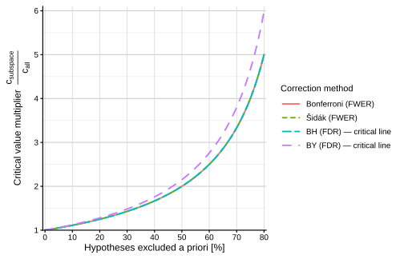
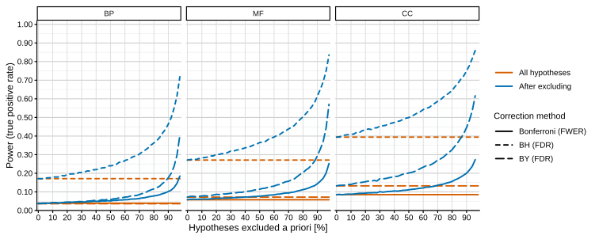

Motivation
The Gene Ontology (GO) is one of the most widely used resources for functional enrichment analysis. Across its three ontologies — Biological Process (BP), Molecular Function (MF), and Cellular Component (CC) — thousands of GO terms are available as potential hypotheses in enrichment testing.
In many workflows, the full ontology is tested by default. However, not all GO terms are meaningful for a given organism or biological question. As a result, enrichment analyses often include large numbers of hypotheses that are biologically irrelevant.
For example, consider an RNA-seq experiment performed in E. coli. The GO Biological Process ontology contains terms such as heart development, ossification, pregnancy, or neuron differentiation. These processes are biologically impossible in bacteria, yet they remain part of the hypothesis space when the full ontology is tested.
In practice, analysts often deal with this implicitly. Common strategies include filtering annotations, removing specific branches of the GO graph, or restricting analyses to annotated terms. However, such steps are frequently implemented through small ad hoc scripts and may not be explicitly documented.
GOcontext does not introduce a fundamentally new statistical method. Instead, it provides tools that make a common practice — restricting the GO hypothesis space prior to enrichment analysis — easier and more transparent.
Importantly, removing hypotheses a priori does not invalidate statistical error control. Procedures such as Bonferroni (FWER control) or Benjamini–Hochberg (FDR control) define their guarantees with respect to the set of hypotheses that are actually tested. If biologically irrelevant hypotheses are excluded before testing, the statistical guarantees remain valid.
At the same time, reducing the hypothesis space decreases the multiple testing burden and can therefore increase statistical power.
The following sections illustrate this effect analytically and through simulation.
Analytical effect of hypothesis space reduction
The effect of hypothesis restriction follows directly from the formulas of multiple-testing correction procedures.
For Bonferroni correction (controlling the family-wise error rate), the rejection threshold is
where denotes the number of tested hypotheses.
If the hypothesis space is reduced a priori to
where is the proportion of excluded hypotheses, the new threshold becomes
The ratio between the new and original thresholds is therefore
Thus, excluding 20% of hypotheses () increases the critical value by a factor of , corresponding to a 25% relaxation.
The same scaling effect appears in the Benjamini–Hochberg (BH) false discovery rate procedure. At rank , the BH rejection rule is
After restricting the hypothesis space,
The Benjamini–Yekutieli (BY) procedure introduces an additional harmonic correction factor, but the dominant dependence on remains. In all cases, reducing the number of hypotheses produces a deterministic relaxation of the rejection threshold.
Critical value multiplier
The deterministic effect of hypothesis restriction can be summarized as a critical value multiplier, defined as
This multiplier depends only on the excluded proportion and is independent of the observed data.

Figure 1. Critical value multiplier under a priori hypothesis restriction. The multiplier represents the factor by which the statistical rejection threshold increases when a proportion of hypotheses is removed before testing.
As the excluded proportion increases, the rejection boundary expands nonlinearly. Even moderate reductions of the hypothesis space can lead to noticeable relaxation of statistical thresholds.
Empirical power gains under Monte Carlo simulation
To examine how the deterministic relaxation of critical values translates into practical performance, we performed a Monte Carlo simulation study.
Simulations were conducted separately for the three GO ontologies (BP, MF, and CC), using hypothesis counts approximating their current sizes. For each ontology, the number of true signals was fixed at
Test statistics were generated under a two-component mixture model:
- true signals were sampled from a normal distribution with mean shift ()
- null hypotheses were sampled from a standard normal distribution
Two-sided p-values were computed from the resulting z-statistics.
To simulate a priori hypothesis restriction, a proportion of null hypotheses was removed before testing, while the number of true signals remained constant.
For each reduced hypothesis space
statistical power (true positive rate) was estimated across repeated Monte Carlo replicates under three multiple testing procedures:
- Bonferroni (FWER control)
- Benjamini–Hochberg (BH; FDR control)
- Benjamini–Yekutieli (BY; FDR control under arbitrary dependence)
Importantly, the statistical procedure itself was unchanged. Only the number of tested hypotheses was reduced before applying the correction. Thus, any observed gain in power arises exclusively from the reduction of multiplicity.

Figure 2. Empirical power gains from a priori hypothesis restriction under Monte Carlo simulation. Only the number of tested hypotheses is reduced; the testing procedure itself remains unchanged.
Across all procedures and ontology sizes, decreasing the hypothesis space leads to systematic increases in statistical power. The magnitude of the gain depends on the correction method and the total number of tests but follows the deterministic scaling behavior derived above.
Practical implications
These results illustrate a simple principle: reducing the number of tested hypotheses can increase sensitivity without violating formal error control, provided that the restriction is defined before testing.
In the context of Gene Ontology analysis, many restrictions are both obvious and biologically justified. Common examples include:
- removing GO terms without annotations for the organism of interest
- excluding ontology branches that are irrelevant for the system under study
- focusing analyses on specific biological regions of the GO graph
Such restrictions are frequently applied informally in enrichment analyses. Making them explicit improves transparency and reproducibility while also reducing the multiple testing burden.
GOcontext provides simple tools to construct restricted GO graphs and export the resulting annotation mappings for enrichment workflows.
```r sessionInfo()